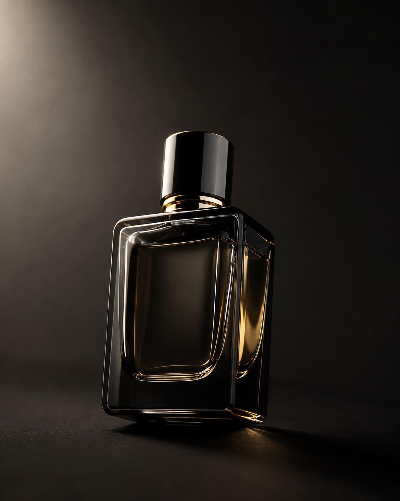

無銘の新商品(艶のある香水瓶)を中央やや下に単体で配置した静物撮影。斜め45度からのローアングルで、商品の輪郭と質感を強調する構図。画角は望遠寄りで背景を大きくぼかす。光は左上からの一灯照明、柔らかいがエッジの立つハイライトを商品の縁に落とし、影は深く長く伸ばす。質感は表面の微細な反射と滑らかさを克明に描写し、指紋や埃のない完璧な仕上げ。色は漆黒に近い背景と深い金のみを商品自体の反射に宿す抑制された配色。背景は無地の暗いグラデーションのみで装飾を排除。雰囲気は静謐で緊張感があり、豪華さより「本物感」を漂わせる。